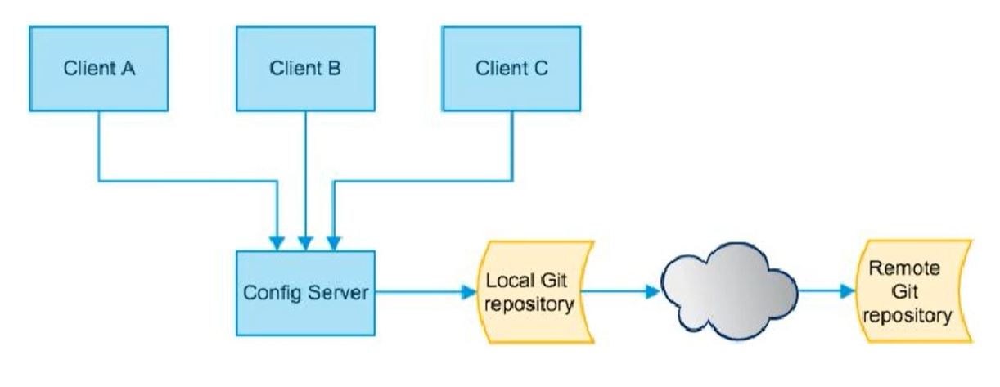

分布式配置中心SpringCloudConfig
概述
面临的问题
微服务意味着要将单体应用中的业务拆分成一个个子服务，每个服务的粒度相对较小，因此系统中会出现大量的服务，由于每个服务都需要必要的配置信息才能运行，所以需要一套集中式、动态的配置管理设施。
SpringCloud提供了ConfigServer来解决这个问题，原来四个微服务，需要配置四个application.yml，但需要四十个微服务，那么就需要配置40份配置文件，我们需要做的就是一处配置，到处生效。
所以这个时候就需要一个统一的配置管理
是什么
SpringCloud Config为微服务架构中的微服务提供集中化的外部配置支持，配置服务器为各个不同微服务应用提供了一个中心化的外部配置。

怎么玩
服务端也称为分布式配置中心，它是一个独立的微服务应用，用来连接配置服务器并为客户端提供获取配置信息，加密/解密信息等访问接口。
客户端则是通过指定的配置中心来管理应用资源，以及与业务相关的配置内容，并在启动的时候从配置中心获取和加载配置信息，配置服务器默认采用git来存储配置信息，这样有助于对环境配置进行版本管理，并且可以通过git客户端工具来方便的管理和访问配置内容。
能做什么
- 集中管理配置文件
- 不同环境不同配置，动态化的配置更新，分布式部署，比如 dev/test/prod/beta/release
- 运行期间动态调整配置，不再需要在每个服务部署的机器上编写配置文件，服务会向配置中心统一拉取自己的信息
- 当配置发生变动时，服务不需要重启即可感知配置的变化并应用新的配置
- 将配置信息以REST接口的形式暴露：post，curl命令刷新
与Github整合部署
由于SpringCloud Config默认使用Git来存储配置文件（也有其他方式，比如支持SVN和本地文件），但最推荐的还是Git，而且使用的是Http/https访问的形式
Config服务端配置与测试
引入依赖
1 | <!--添加消息总线Rabbitmq支持--> |
修改YML
1 | server: |
配置读取规则
- /{label}/{application}-{profile}.yml
- /{application}-{profile}.yml
参数总结
label：分支，branch
name：服务名
profiles：环境(dev/test/prod)
Config客户端配置与测试
引入依赖
1 | <!--添加消息总线Rabbitmq支持--> |
bootstrap.yml
application.yml：是用户级的资源配置项
bootstrap.yml：是系统级别的，优先级更加高
Spring Cloud会创建一个Bootstrap Context，作为Spring应用的Application Context的父上下文。初始化的时候，Bootstrap Context负责从外部源加载配置属性并解析配置。这两个上下文共享一个从外部获取的Environment。
Bootstrap属性有高优先级，默认情况下，他们不会被本地配置覆盖，Bootstrap context 和 Application Context有着不同的约定，所以新增了一个bootstrap.yml文件，保证Bootstrap Context 和 Application Context配置的分离。
要将客户端Client模块下的Application.yml文件改成bootstrap.yml这是很关键的，因为bootstrap.yml是比application.yml先加载的，bootstrap.yml优先级高于application.yml
1 | server: |
存在的问题
分布式配置的动态刷新问题？
- Linux运维修改Github上的配置文件内容做调整
- 刷新3344，发现ConfigServer配置中心立刻响应
- 刷新3355，发现ConfigClient客户端没有任何响应
- 3355没有变化除非自己重启或者重启加载
- 难道每次运维修改后，都需要重启？
相当于直接修改Github上的配置文件，配置不会改变，这个时候就存在了分布式配置的动态刷新问题
Config客户端之动态刷新
为了避免每次更新配置都要重启客户端微服务3355
引入了动态刷新
引入actuator监控依赖
1 | <!--web启动器--> |
然后修改bootstrap.yml，暴露监控端点
1 | #暴露监控端点 |
在业务类中，添加 @RefreshScope标签
1 | @RestController |
然后让运维人员发送一个post请求
1 | curl -X POST "http://localhost:3355/actuator/refresh" |
然后就能够生效了，成功刷新了配置，避免了服务重启
这个方案存在问题：
- 假设有多个微服务客户端 3355/ 3366 / 3377
- 每个微服务都要执行一次post请求，手动刷新？
- 可否广播，一次通知，处处生效？
- ….
目前来说，暂时做不到这个，所以才有了Spring Cloud Bus，即，消息总线。